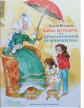

Вдоль по радуге, или Приключения Печенюшкина

Несколько сот лет назад в бразильских джунглях в водовороте необыкновенных приключений маленькая голубоглазая обезьянка Пичи-Нюш, пожертвовавшая своей жизнью ради спасения друга, получила в дар от Богов не только новую жизнь, но и безграничные волшебные свойства. С тех пор живет на свете и борется со злом во всех его обличьях Великий Воин Справедливости, рыцарь без страха и упрека - Печенюшкин. Великий чародей, существо с тысячью обличий, история которого уходит глубоко в века, могучий и грозный защитник, - и в то же время озорной, веселый мальчишка, хвастун, фанфарон, клоун, верный и неистощимый на выдумки друг. Таков он - Печенюшкин - главный герой трех сказочных повестей. В данное издание вошла повесть-сказка для детей младшего и среднего школьного возраста ВДОЛЬ ПО РАДУГЕ, ИЛИ ПРИКЛЮЧЕНИЯ ПЕЧЕНЮШКИНА. Сохранность:Отличная.2016 год